VŨNG TÀU - Mũi đất Thánh Jacques
Chạy trốn cái nắng oi ả của Sài Gòn, Vũng Tàu hiện lên như một thiên đường nghỉ dưỡng đầy hấp dẫn. Nơi đây, những bãi biển trải dài với cát trắng mịn màng và làn nước trong xanh như ngọc, hứa hẹn mang đến những giây phút thư giãn tuyệt vời. Khí hậu ở Vũng Tàu luôn dễ chịu, không quá lạnh cũng không quá nóng, tạo điều kiện lý tưởng cho những chuyến dã ngoại hay đơn giản là ngồi nhâm nhi ly cà phê bên bờ biển.
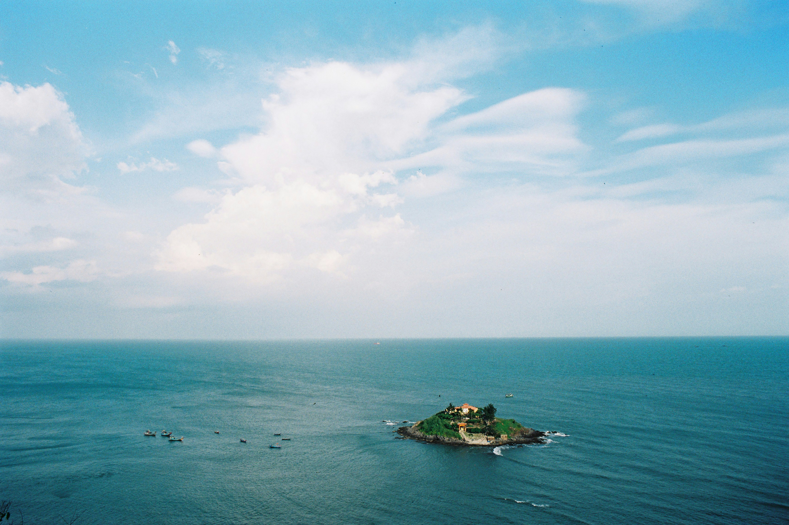
Khám phá Vũng Tàu, bạn sẽ không thể bỏ qua những hoạt động thú vị như tắm biển, tham gia các trò chơi thể thao dưới nước hay thưởng thức hải sản tươi ngon tại các quán ven biển. Nếu bạn yêu thích sự mạo hiểm, hãy thử sức với việc lướt sóng hay đi bộ đường dài lên đỉnh núi Nhỏ để chiêm ngưỡng toàn cảnh thành phố từ trên cao. Tại đây, bạn sẽ được hòa mình vào không gian yên bình, với tiếng sóng vỗ và gió biển thổi mát rượi.
Vũng Tàu không chỉ là nơi để thư giãn mà còn là điểm đến lý tưởng để khám phá văn hóa địa phương. Hãy ghé thăm các ngôi chùa, đền thờ hay những công trình kiến trúc độc đáo, nơi bạn có thể tìm hiểu thêm về lịch sử và con người nơi đây. Tất cả những điều này tạo nên một trải nghiệm tuyệt vời, khiến bạn không thể nào quên khi rời xa Vũng Tàu.
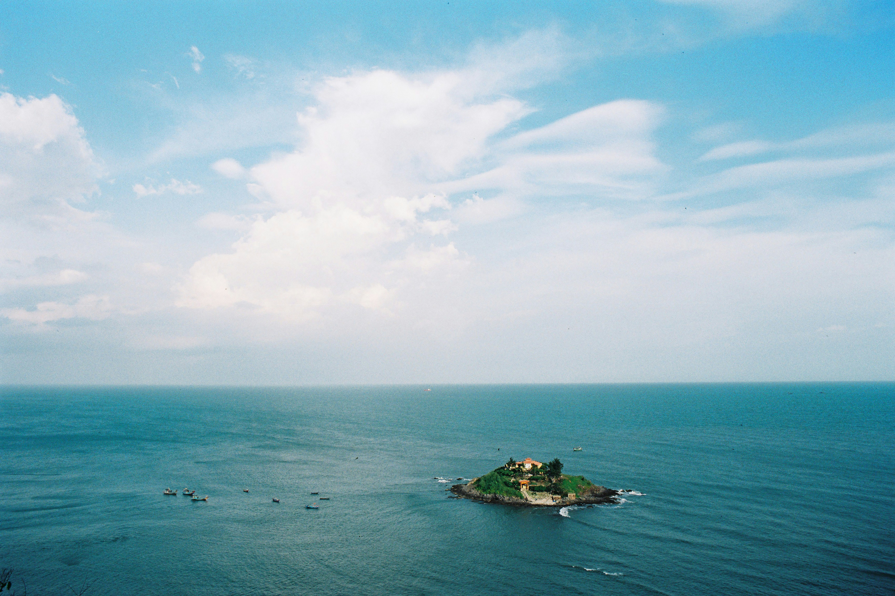
Khám phá Vũng Tàu, bạn sẽ không thể bỏ qua những hoạt động thú vị như tắm biển, tham gia các trò chơi thể thao dưới nước hay thưởng thức hải sản tươi ngon tại các quán ven biển. Nếu bạn yêu thích sự mạo hiểm, hãy thử sức với việc lướt sóng hay đi bộ đường dài lên đỉnh núi Nhỏ để chiêm ngưỡng toàn cảnh thành phố từ trên cao. Tại đây, bạn sẽ được hòa mình vào không gian yên bình, với tiếng sóng vỗ và gió biển thổi mát rượi.
Vũng Tàu không chỉ là nơi để thư giãn mà còn là điểm đến lý tưởng để khám phá văn hóa địa phương. Hãy ghé thăm các ngôi chùa, đền thờ hay những công trình kiến trúc độc đáo, nơi bạn có thể tìm hiểu thêm về lịch sử và con người nơi đây. Tất cả những điều này tạo nên một trải nghiệm tuyệt vời, khiến bạn không thể nào quên khi rời xa Vũng Tàu.
Vị trí địa lý
Vũng Tàu, thành phố biển xinh đẹp của tỉnh Bà Rịa - Vũng Tàu, sở hữu một vị trí địa lý vô cùng thuận lợi. Nằm ở phía Đông Nam của Việt Nam, thành phố này như một viên ngọc quý được thiên nhiên ưu ái ban tặng. Với bờ biển trải dài, khí hậu nhiệt đới quanh năm ấm áp, Vũng Tàu không chỉ là một điểm đến du lịch hấp dẫn mà còn là một trung tâm kinh tế sầm uất.
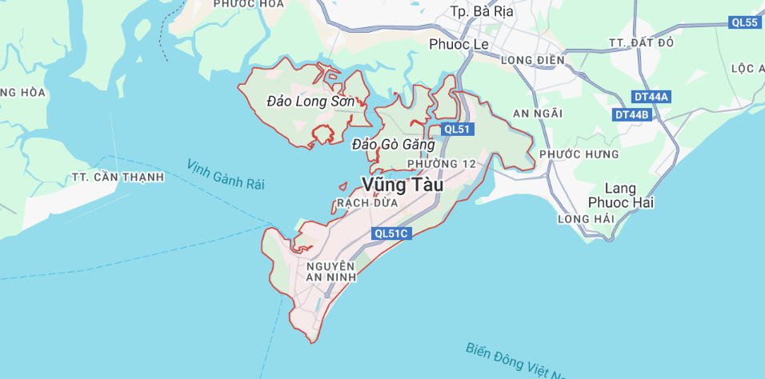
Vị trí địa lý của Vũng Tàu còn mang ý nghĩa chiến lược quan trọng. Là cửa ngõ ra biển của khu vực Đông Nam Bộ, thành phố này đóng vai trò trung chuyển hàng hóa, thúc đẩy giao thương trong và ngoài nước. Bên cạnh đó, Vũng Tàu còn là một căn cứ hải quân vững chắc, bảo vệ vững chắc vùng biển phía Nam của Tổ quốc. Nhờ có vị trí địa lý thuận lợi, Vũng Tàu đã và đang phát triển mạnh mẽ, trở thành một trong những thành phố năng động nhất của Việt Nam.
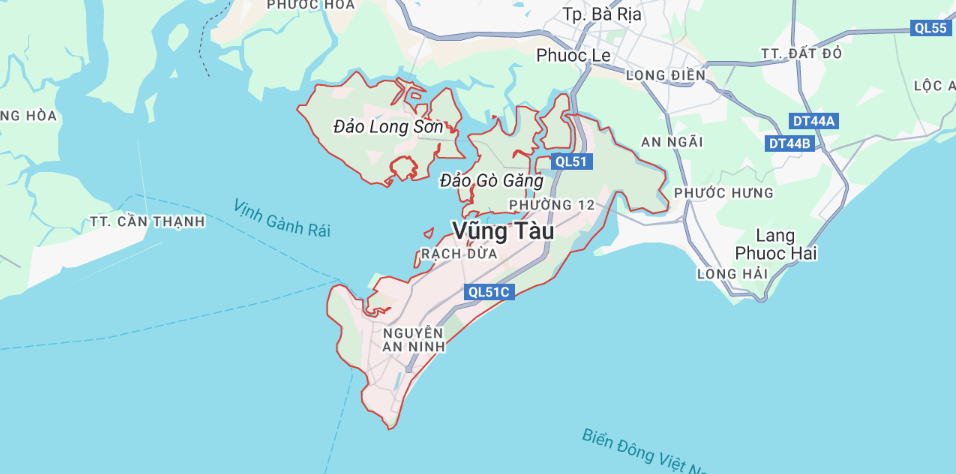
Vị trí địa lý của Vũng Tàu còn mang ý nghĩa chiến lược quan trọng. Là cửa ngõ ra biển của khu vực Đông Nam Bộ, thành phố này đóng vai trò trung chuyển hàng hóa, thúc đẩy giao thương trong và ngoài nước. Bên cạnh đó, Vũng Tàu còn là một căn cứ hải quân vững chắc, bảo vệ vững chắc vùng biển phía Nam của Tổ quốc. Nhờ có vị trí địa lý thuận lợi, Vũng Tàu đã và đang phát triển mạnh mẽ, trở thành một trong những thành phố năng động nhất của Việt Nam.
Cảnh quan
Vũng Tàu, viên ngọc quý của miền Đông Nam Bộ, luôn biết cách làm say lòng du khách bởi vẻ đẹp đa dạng của mình. Thành phố biển này là sự kết hợp hài hòa giữa biển xanh, núi non hùng vĩ và những công trình kiến trúc độc đáo.
Bờ biển Vũng Tàu trải dài với cát trắng mịn màng, sóng biển rì rào tạo nên một khung cảnh lãng mạn. Du khách có thể thỏa sức tắm biển, lướt sóng, hoặc đơn giản chỉ là ngồi ngắm hoàng hôn buông xuống.
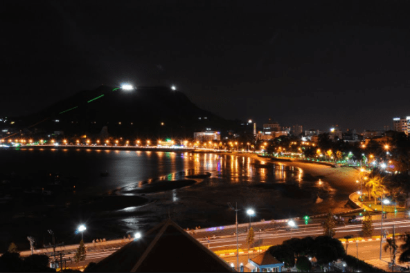
Bên cạnh những bãi biển đẹp, Vũng Tàu còn có những ngọn núi như Núi Nhỏ, Núi Lớn với những con đường uốn lượn, mang đến cho du khách những trải nghiệm khám phá thú vị. Từ đỉnh núi, du khách có thể ngắm nhìn toàn cảnh thành phố và biển cả bao la.
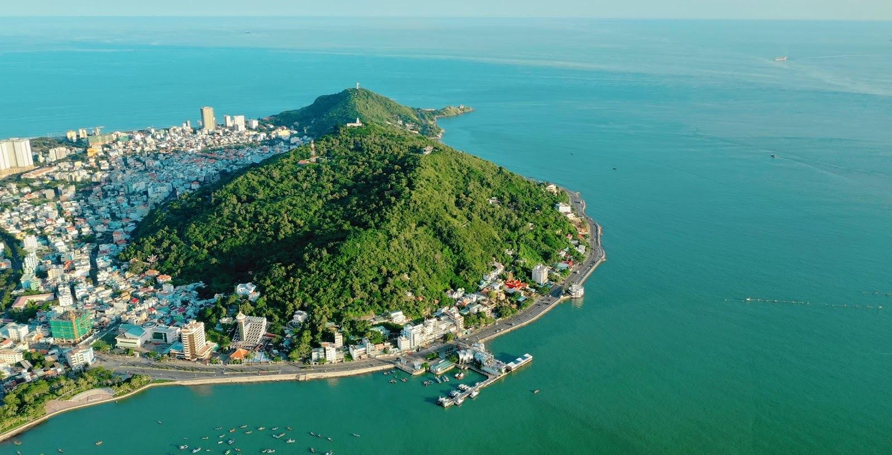
Vũng Tàu không chỉ có thiên nhiên ưu đãi mà còn nổi tiếng với những công trình kiến trúc độc đáo. Tượng Chúa Kitô trên Núi Nhỏ, Bạch Dinh, Ni viện Vĩnh Sơn,... là những điểm đến không thể bỏ qua khi đến Vũng Tàu.
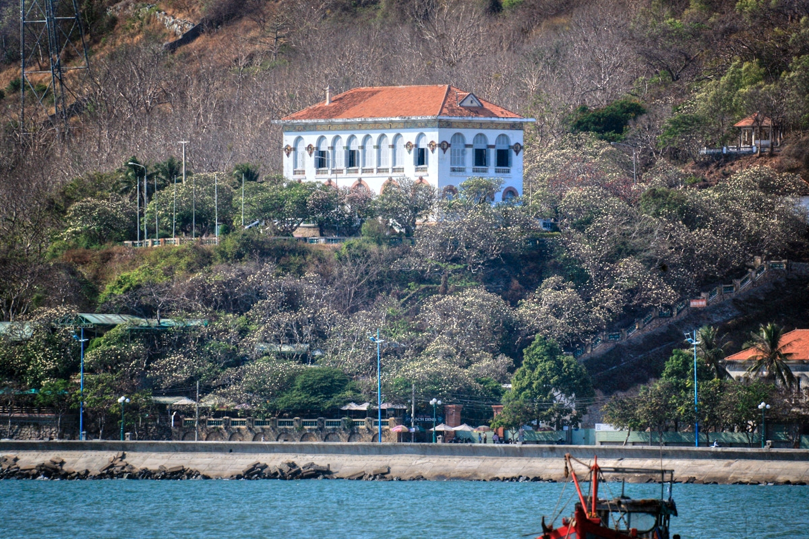
Những công trình này mang đậm dấu ấn lịch sử và văn hóa, góp phần làm phong phú thêm bức tranh đa sắc màu của thành phố biển.
Bờ biển Vũng Tàu trải dài với cát trắng mịn màng, sóng biển rì rào tạo nên một khung cảnh lãng mạn. Du khách có thể thỏa sức tắm biển, lướt sóng, hoặc đơn giản chỉ là ngồi ngắm hoàng hôn buông xuống.
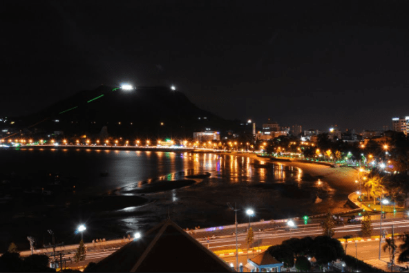
Bên cạnh những bãi biển đẹp, Vũng Tàu còn có những ngọn núi như Núi Nhỏ, Núi Lớn với những con đường uốn lượn, mang đến cho du khách những trải nghiệm khám phá thú vị. Từ đỉnh núi, du khách có thể ngắm nhìn toàn cảnh thành phố và biển cả bao la.
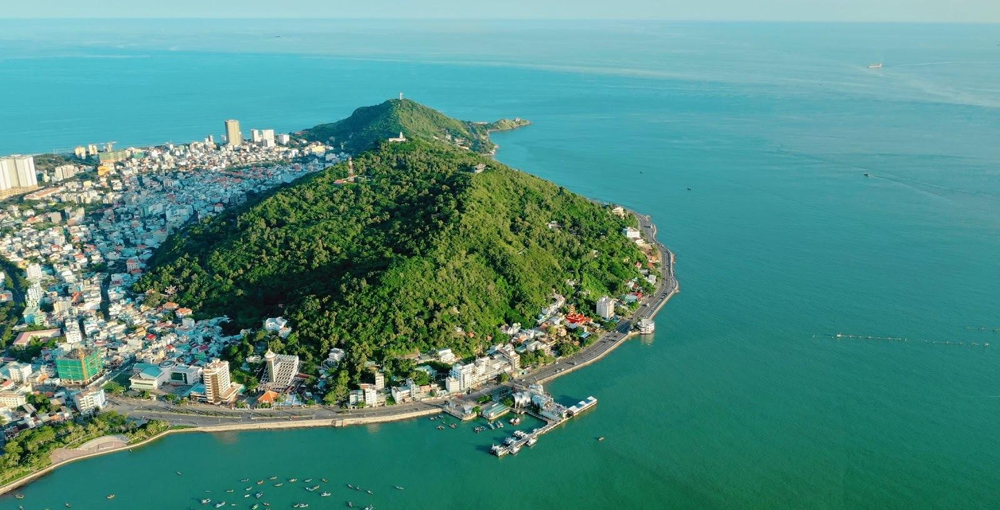
Vũng Tàu không chỉ có thiên nhiên ưu đãi mà còn nổi tiếng với những công trình kiến trúc độc đáo. Tượng Chúa Kitô trên Núi Nhỏ, Bạch Dinh, Ni viện Vĩnh Sơn,... là những điểm đến không thể bỏ qua khi đến Vũng Tàu.
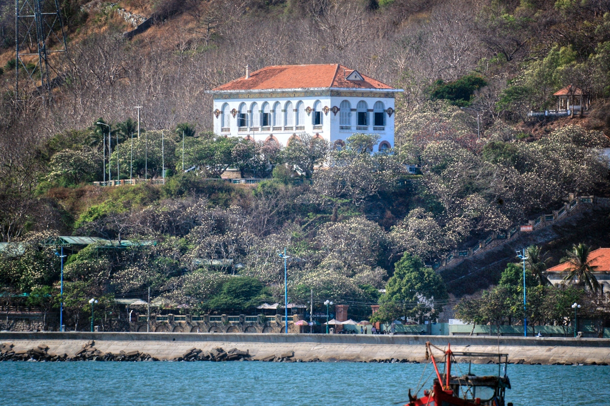
Những công trình này mang đậm dấu ấn lịch sử và văn hóa, góp phần làm phong phú thêm bức tranh đa sắc màu của thành phố biển.
Ẩm thực
Đến Vũng Tàu, du khách không chỉ được đắm mình trong không gian biển xanh, cát trắng mà còn được thưởng thức những món hải sản tươi ngon, đậm đà hương vị biển cả. Ẩm thực Vũng Tàu nổi tiếng với các món ăn chế biến từ hải sản tươi sống như: ghẹ hấp, cua rang me, mực nướng muối ớt, ốc hương hấp gừng, và đặc biệt là lẩu cá đuối.
Lẩu cá đuối với thịt cá trắng phau, ngọt thanh, kết hợp cùng các loại rau củ tươi ngon và nước dùng chua cay đậm đà là một món ăn không thể bỏ qua khi đến Vũng Tàu. Thịt cá đuối khi ăn có vị ngọt tự nhiên, không tanh, lại rất giàu dinh dưỡng.
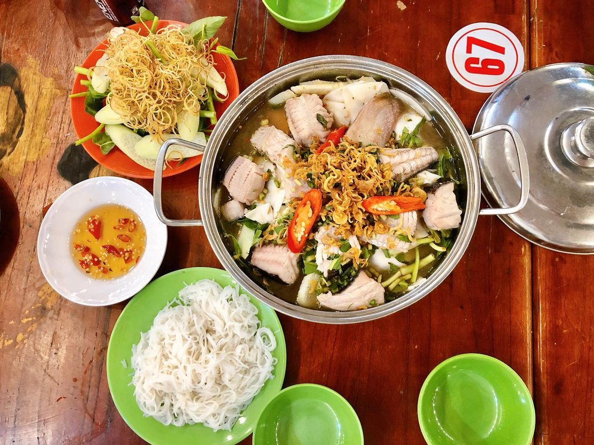
Bên cạnh hải sản, Vũng Tàu còn có nhiều món ăn đặc sản khác như bánh khọt giòn tan, bánh căn nóng hổi, bánh xèo thơm lừng... Những món ăn này không chỉ ngon miệng mà còn là nét đặc trưng của ẩm thực miền biển.
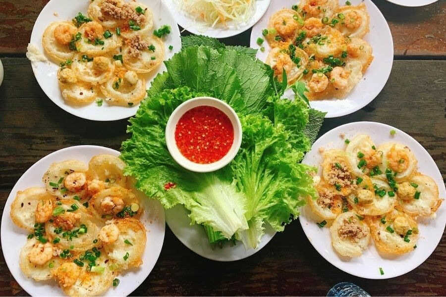
Đặc biệt, không thể không nhắc đến các quán ăn vặt ven biển. Bạn có thể dễ dàng tìm thấy những quán bánh tráng nướng, bánh tráng cuốn thịt heo, kem dừa... với giá cả phải chăng và hương vị thơm ngon. Với sự đa dạng về món ăn, Vũng Tàu chắc chắn sẽ làm hài lòng mọi thực khách, từ những người sành ăn cho đến những ai yêu thích khám phá ẩm thực đường phố.
Lẩu cá đuối với thịt cá trắng phau, ngọt thanh, kết hợp cùng các loại rau củ tươi ngon và nước dùng chua cay đậm đà là một món ăn không thể bỏ qua khi đến Vũng Tàu. Thịt cá đuối khi ăn có vị ngọt tự nhiên, không tanh, lại rất giàu dinh dưỡng.
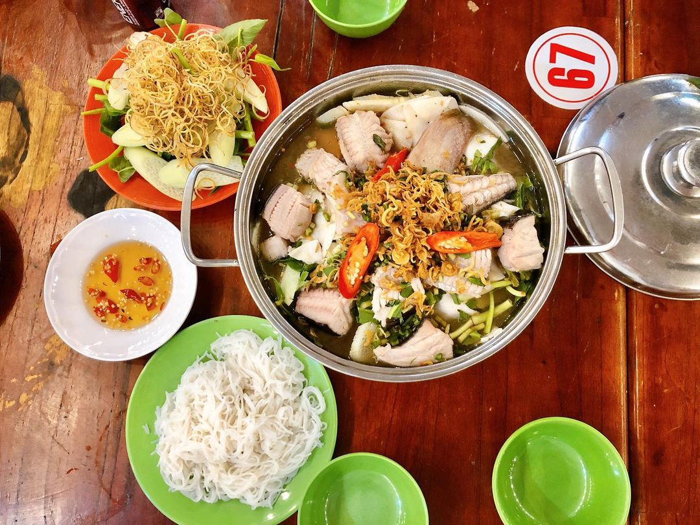
Bên cạnh hải sản, Vũng Tàu còn có nhiều món ăn đặc sản khác như bánh khọt giòn tan, bánh căn nóng hổi, bánh xèo thơm lừng... Những món ăn này không chỉ ngon miệng mà còn là nét đặc trưng của ẩm thực miền biển.
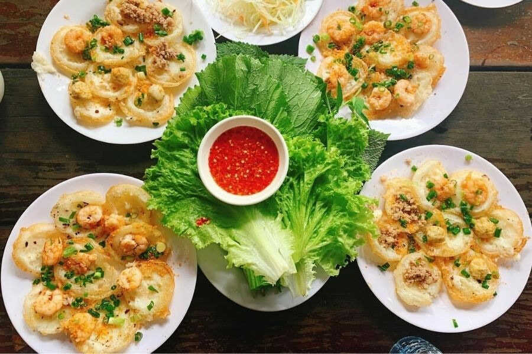
Đặc biệt, không thể không nhắc đến các quán ăn vặt ven biển. Bạn có thể dễ dàng tìm thấy những quán bánh tráng nướng, bánh tráng cuốn thịt heo, kem dừa... với giá cả phải chăng và hương vị thơm ngon. Với sự đa dạng về món ăn, Vũng Tàu chắc chắn sẽ làm hài lòng mọi thực khách, từ những người sành ăn cho đến những ai yêu thích khám phá ẩm thực đường phố.
Con người
Người dân bản địa ở Vũng Tàu được biết đến với tính cách thân thiện, cởi mở và hiếu khách. Vùng đất này không chỉ nổi tiếng với cảnh đẹp thiên nhiên mà còn với văn hóa phong phú và lịch sử lâu đời. Những người dân nơi đây thường sống giản dị, chân chất và gần gũi với thiên nhiên. Đa số họ làm nghề chài lưới, du lịch hoặc buôn bán nhỏ lẻ, và luôn giữ vững nét truyền thống văn hóa đặc trưng của vùng biển.
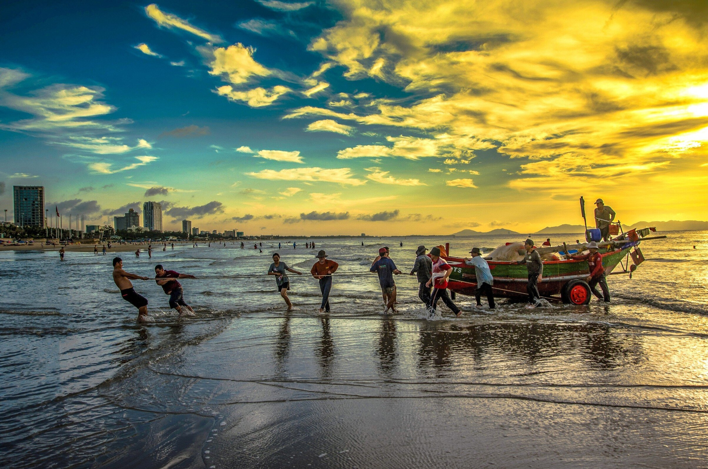
Tính cách hiền hòa, lạc quan của người dân Vũng Tàu được thể hiện rõ qua cách họ chào đón du khách và giúp đỡ lẫn nhau trong cuộc sống hàng ngày. Họ luôn sẵn lòng chia sẻ những câu chuyện về lịch sử, văn hóa cũng như những địa điểm đẹp của thành phố. Đặc biệt, vào những dịp lễ hội, người dân địa phương rất tích cực tham gia và tạo nên bầu không khí sôi động, đoàn kết.
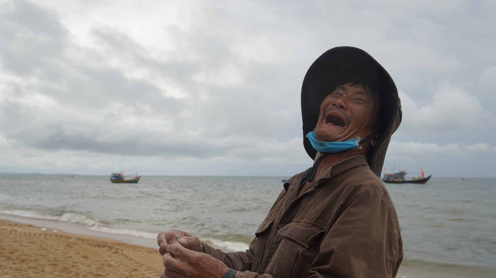
Sự chân thành và mến khách của người dân bản địa Vũng Tàu không chỉ góp phần làm đẹp thêm hình ảnh thành phố, mà còn tạo nên ấn tượng tốt đẹp trong lòng du khách, khiến họ muốn quay lại nhiều lần.
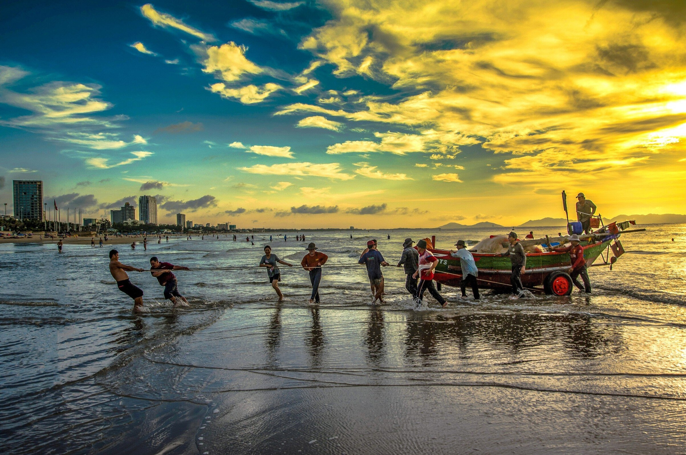
Tính cách hiền hòa, lạc quan của người dân Vũng Tàu được thể hiện rõ qua cách họ chào đón du khách và giúp đỡ lẫn nhau trong cuộc sống hàng ngày. Họ luôn sẵn lòng chia sẻ những câu chuyện về lịch sử, văn hóa cũng như những địa điểm đẹp của thành phố. Đặc biệt, vào những dịp lễ hội, người dân địa phương rất tích cực tham gia và tạo nên bầu không khí sôi động, đoàn kết.
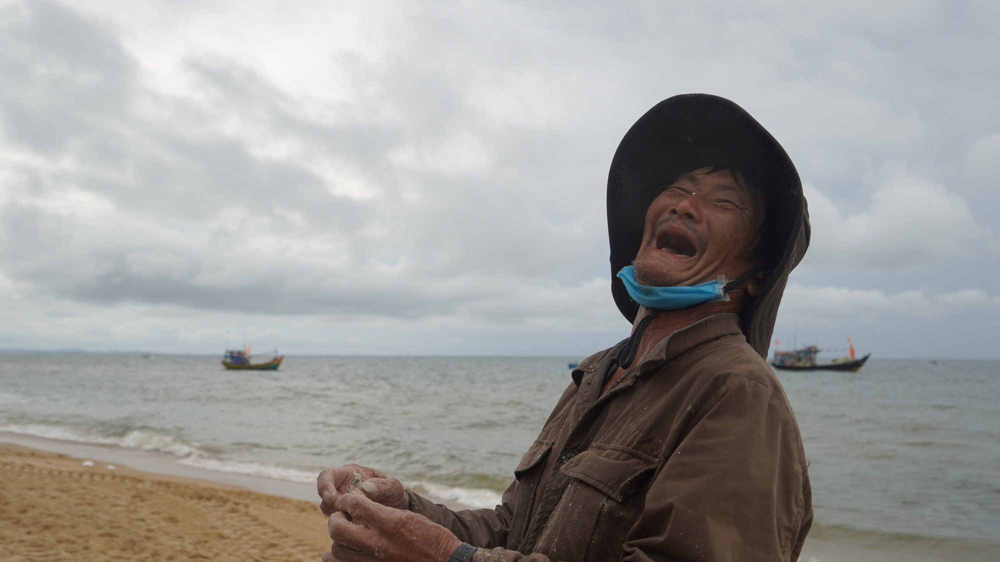
Sự chân thành và mến khách của người dân bản địa Vũng Tàu không chỉ góp phần làm đẹp thêm hình ảnh thành phố, mà còn tạo nên ấn tượng tốt đẹp trong lòng du khách, khiến họ muốn quay lại nhiều lần.
Lịch sử
Vũng Tàu, với vị trí chiến lược nằm bên bờ biển Đông, từ lâu đã là một địa điểm quan trọng trong lịch sử Việt Nam. Lịch sử Vũng Tàu bắt đầu từ thời kỳ tiền sử, khi vùng đất này là nơi định cư của người cổ đại. Theo dòng thời gian, nơi đây dần trở thành một trong những cảng thương mại quan trọng, giao thương sầm uất với các nước láng giềng.
Thời kỳ Pháp thuộc, Vũng Tàu được người Pháp phát triển thành một trung tâm nghỉ dưỡng và du lịch nổi tiếng, được biết đến với tên gọi Cap Saint-Jacques. Các công trình kiến trúc mang phong cách Pháp như Nhà thờ Đức Bà Bãi Dâu, Dinh Bảo Đại vẫn còn tồn tại và thu hút du khách đến tham quan.
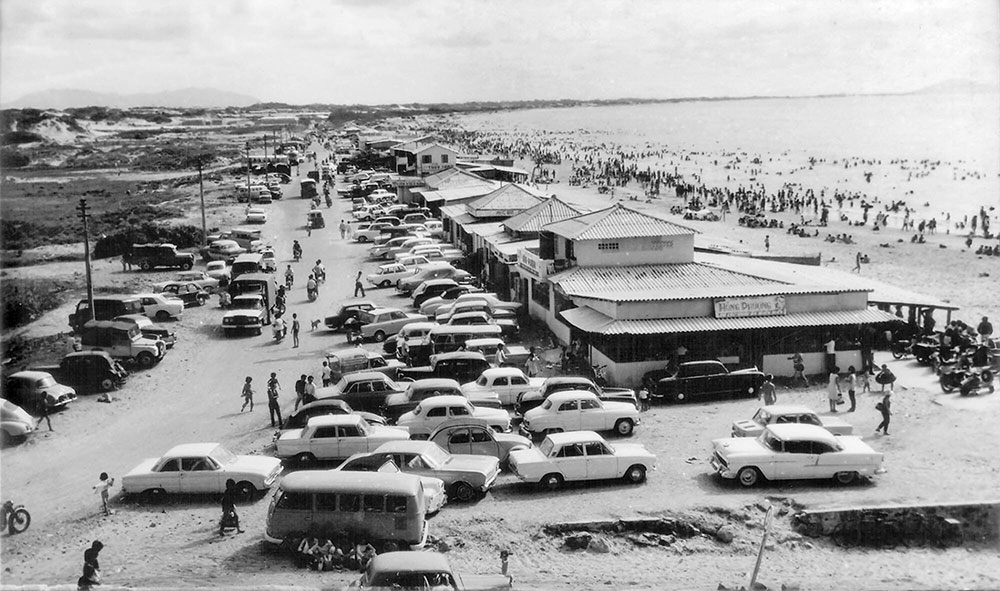
Trong thời kỳ kháng chiến chống Mỹ, Vũng Tàu là căn cứ quân sự quan trọng của quân đội Việt Nam Cộng hòa và quân đội Hoa Kỳ. Sau khi đất nước thống nhất vào năm 1975, Vũng Tàu trải qua quá trình phục hồi và phát triển, trở thành một thành phố năng động và hiện đại.
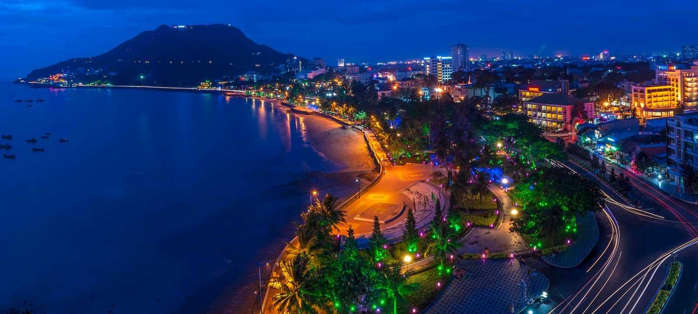
Ngày nay, Vũng Tàu nổi tiếng với những bãi biển đẹp, các khu du lịch và các lễ hội văn hóa truyền thống đặc sắc. Thành phố này không chỉ là điểm đến du lịch hấp dẫn mà còn là một trung tâm kinh tế, công nghiệp và năng lượng quan trọng của Việt Nam. Vũng Tàu tiếp tục phát triển và duy trì vai trò quan trọng trong nền kinh tế và văn hóa của đất nước.
Thời kỳ Pháp thuộc, Vũng Tàu được người Pháp phát triển thành một trung tâm nghỉ dưỡng và du lịch nổi tiếng, được biết đến với tên gọi Cap Saint-Jacques. Các công trình kiến trúc mang phong cách Pháp như Nhà thờ Đức Bà Bãi Dâu, Dinh Bảo Đại vẫn còn tồn tại và thu hút du khách đến tham quan.
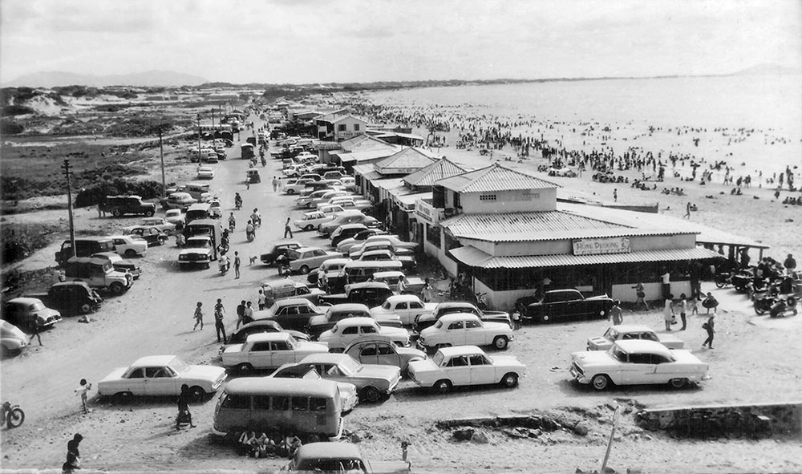
Trong thời kỳ kháng chiến chống Mỹ, Vũng Tàu là căn cứ quân sự quan trọng của quân đội Việt Nam Cộng hòa và quân đội Hoa Kỳ. Sau khi đất nước thống nhất vào năm 1975, Vũng Tàu trải qua quá trình phục hồi và phát triển, trở thành một thành phố năng động và hiện đại.
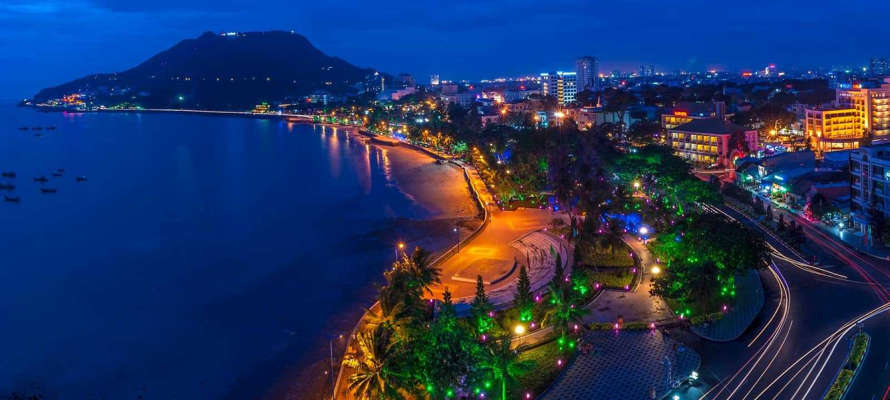
Ngày nay, Vũng Tàu nổi tiếng với những bãi biển đẹp, các khu du lịch và các lễ hội văn hóa truyền thống đặc sắc. Thành phố này không chỉ là điểm đến du lịch hấp dẫn mà còn là một trung tâm kinh tế, công nghiệp và năng lượng quan trọng của Việt Nam. Vũng Tàu tiếp tục phát triển và duy trì vai trò quan trọng trong nền kinh tế và văn hóa của đất nước.